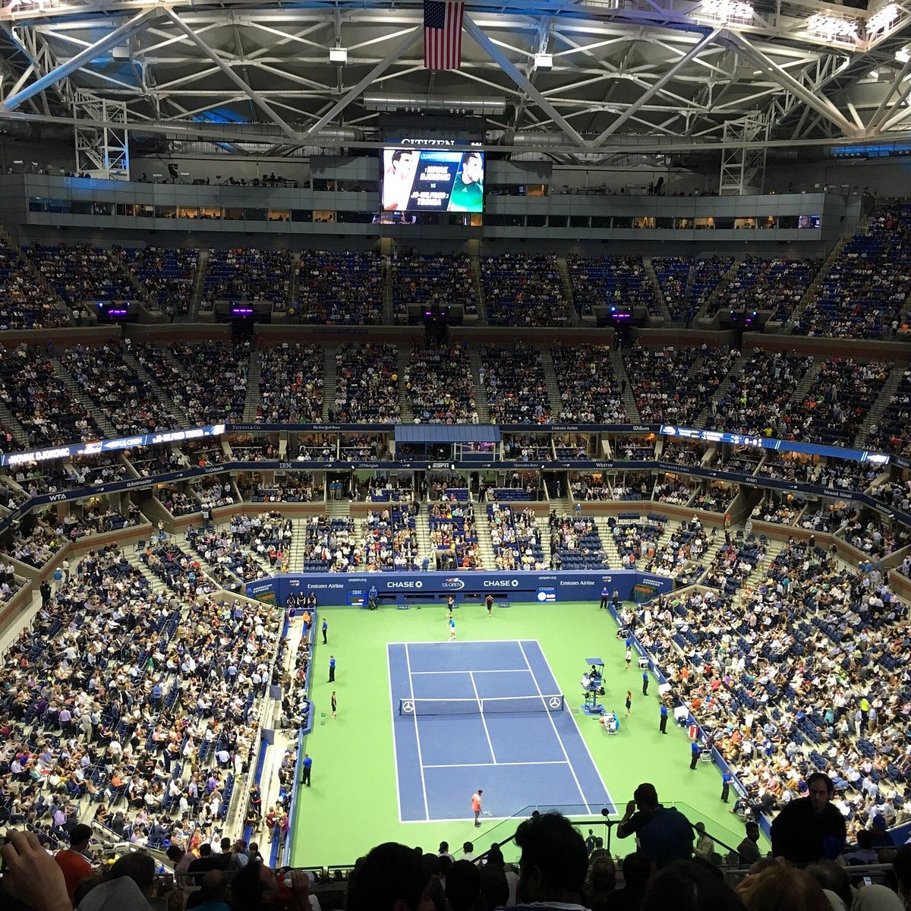
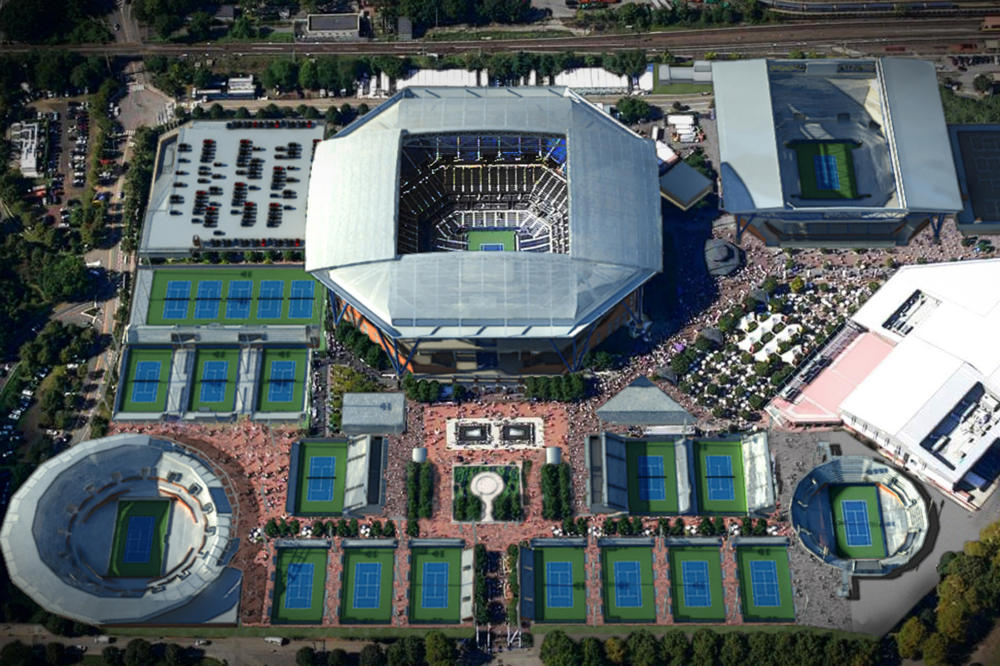

US Open 2026
- Local: Nova York.
- O US Open é realizado na cidade de Nova York, nos Estados Unidos, mais especificamente no complexo USTA Billie Jean King National Tennis Center, localizado no bairro de Queens. O complexo reúne diversas quadras de tênis e recebe milhares de torcedores durante o torneio. Nova York é uma das cidades mais conhecidas e movimentadas do mundo, o que contribui para a grande importância e visibilidade internacional do evento. O torneio acontece anualmente no final do verão norte-americano e transforma a região em um dos principais centros do tênis mundial durante suas semanas de competição.
- Data: a partir do dia 30/08/2026.
- A edição de 2026 do US Open começa em 30 de agosto de 2026 e reúne os principais jogadores de tênis do mundo. O torneio acontece durante aproximadamente duas semanas, contando com partidas das categorias masculina e feminina, além das competições de duplas. A competição faz parte dos quatro torneios de Grand Slam e é tradicionalmente o último Grand Slam da temporada. Durante o evento, os atletas disputam partidas eliminatórias até chegar às finais, nas quais são definidos os campeões masculino e feminino.
- Arthur Ashe Stadium: Principal arena.
O Arthur Ashe Stadium é a principal e maior arena do complexo onde acontece o US Open. Localizado em Queens, Nova York, o estádio recebeu esse nome em homenagem a Arthur Ashe, tenista norte-americano que foi campeão do US Open em 1968 e teve grande importância na história do esporte. O estádio foi inaugurado em 1997 e possui capacidade para mais de 23 mil espectadores, sendo uma das maiores arenas dedicadas ao tênis no mundo. É nele que acontecem algumas das partidas mais importantes do torneio, incluindo grandes confrontos e as finais de simples.
- História do US Open.
O US Open é um dos torneios de tênis mais tradicionais do mundo e possui uma história que começou no final do século XIX. A primeira edição do campeonato aconteceu em 1881, inicialmente como uma competição masculina. Ao longo dos anos, o torneio passou por mudanças de nome, local e formato até se tornar o evento internacional que conhecemos atualmente. Desde 1968, com o início da Era Aberta do tênis, jogadores profissionais passaram a competir junto com os amadores, aumentando ainda mais a importância do torneio.
- Grand Slam.
O US Open faz parte dos quatro torneios de Grand Slam do tênis, ao lado do Australian Open, Roland Garros e Wimbledon. Esses quatro eventos são considerados os mais importantes e prestigiados do calendário profissional. Vencer um Grand Slam é uma das maiores conquistas que um tenista pode alcançar em sua carreira, e conquistar os quatro diferentes ao longo da carreira é uma marca extremamente importante na história do esporte.
- Particularidade do US Open
Uma das características mais marcantes do US Open são as partidas noturnas, que podem acontecer em grandes estádios diante de milhares de torcedores. A atmosfera durante esses jogos é bastante conhecida no mundo do tênis, principalmente por causa da grande quantidade de público e da energia característica de Nova York. As sessões noturnas se tornaram uma das marcas registradas do torneio.
.Glossário
- Grand Slam
- conjunto dos quatro maiores torneios de tênis do mundo: Australian Open, Roland Garros, Wimbledon e US Open.
- US Open
- torneio norte-americano de tênis realizado anualmente em Nova York.
- Arthur Ashe Stadium
- principal estádio do US Open.
- Billie Jean King
- ex-tenista e importante figura da história do tênis.
- Flushing Meadows
- localização do complexo USTA Billie Jean King National Tennis Center, onde acontece o US Open.
- Queens
- bairro de Nova York onde está localizado o complexo do US Open.
- Quadra dura (hard court)
- tipo de piso utilizado no US Open, caracterizado por ser mais rápido e favorecer jogadores com bom saque e habilidades de ataque.
- Set
- conjunto de games que compõem uma partida de tênis.
- Game
- unidade de pontuação em uma partida de tênis, composta por pontos individuais.
- Ace
- serviço que o jogador faz sem que o adversário consiga tocar a bola, resultando em ponto para o saque.
US Open

